1 / 13
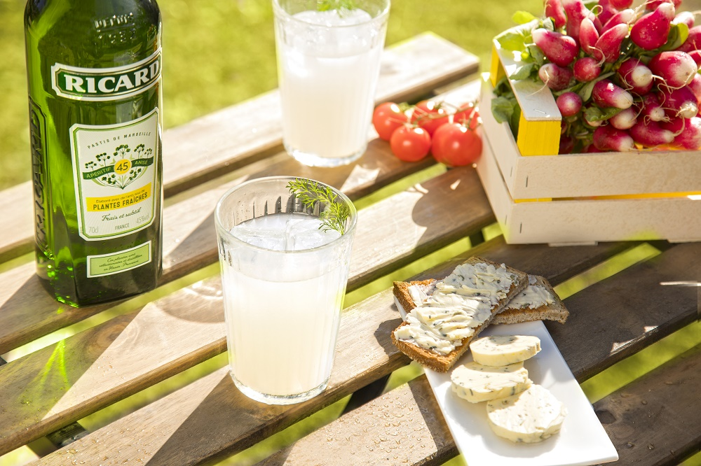
Le Pastis
2 / 13
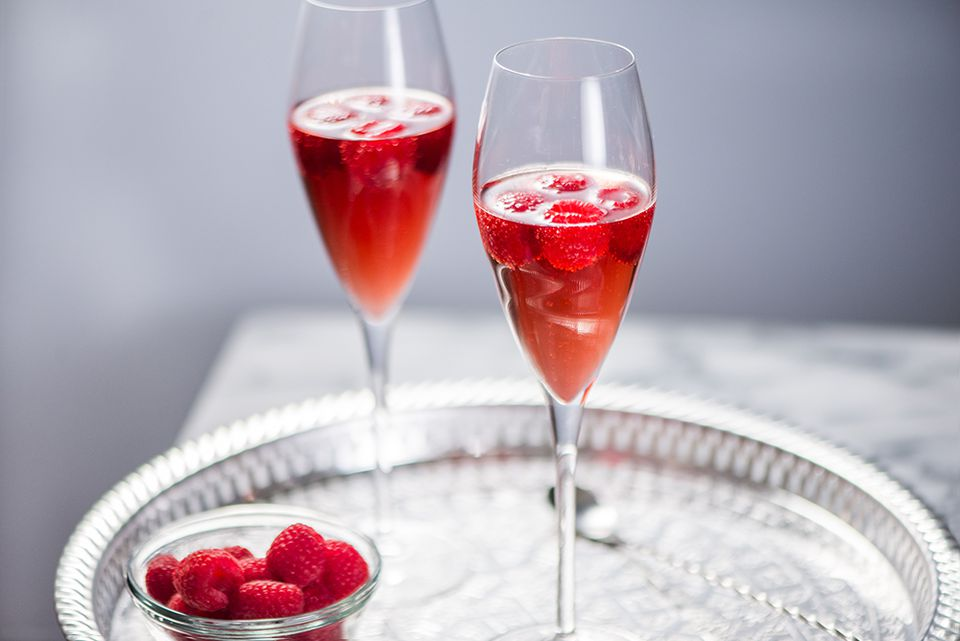
Le Kir
3 / 13
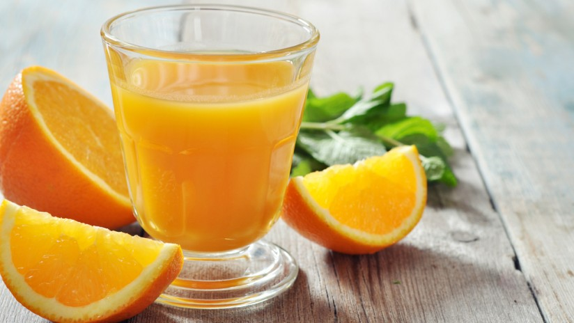
Le jus d'orange
4 / 13
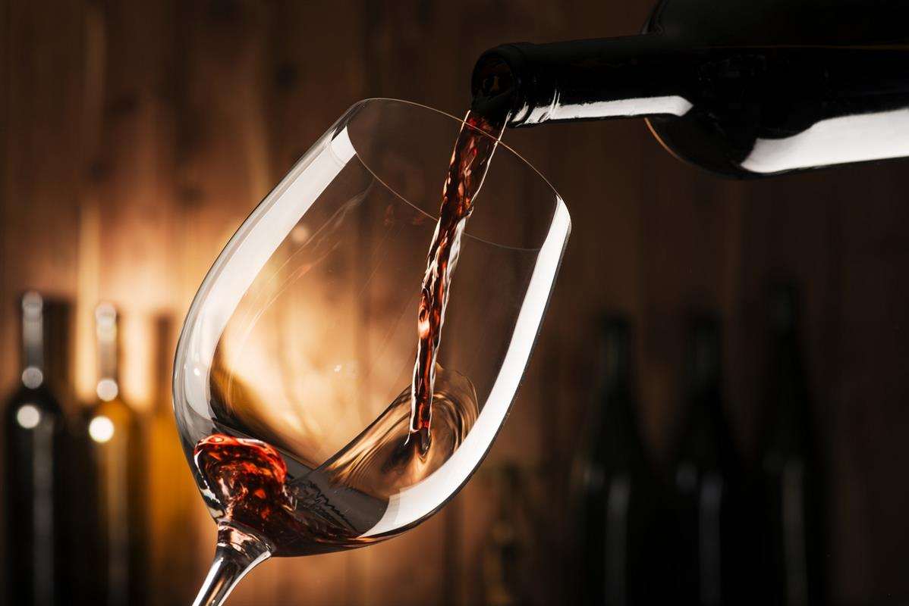
Le vin
5 / 13
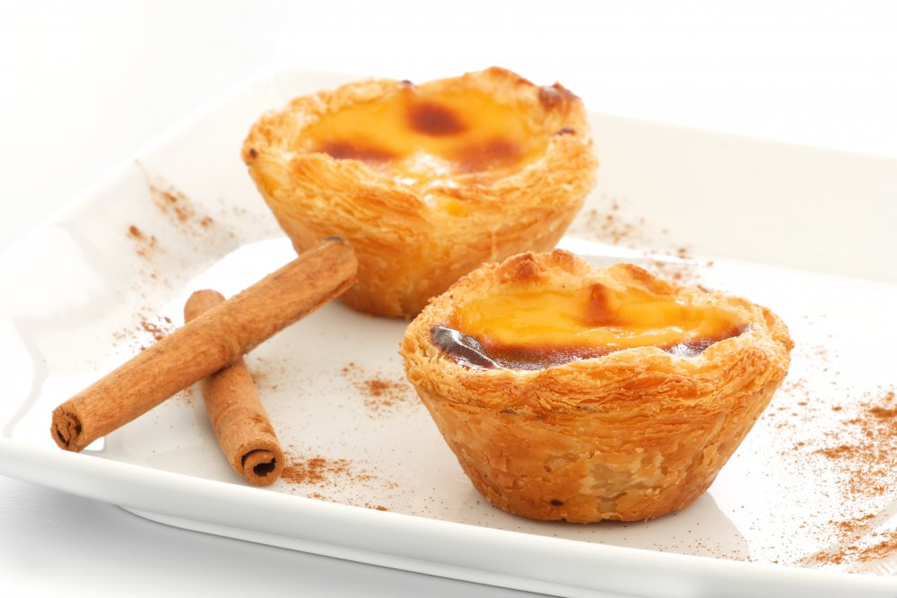
Le puits d'amour
6 / 13

Le Paris-Brest
7 / 13
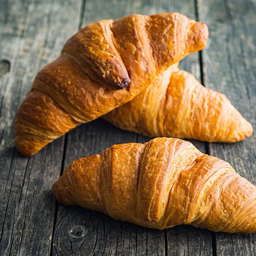
Le croissant
8 / 13
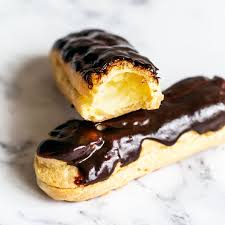
L'eclaires
9 / 13
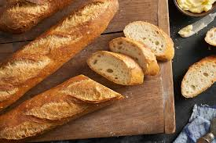
Le baguette
10 / 13
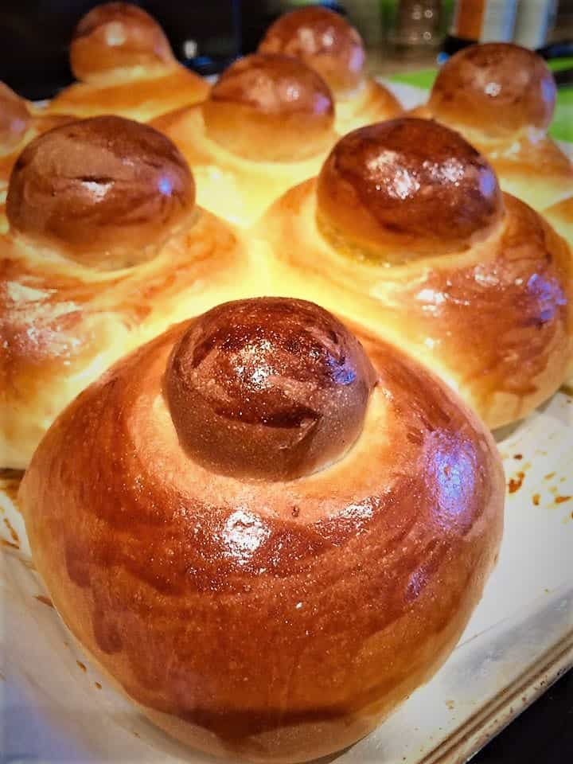
La brioche
10 / 13
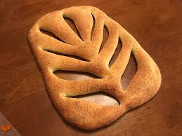
La fougasse
11 / 13
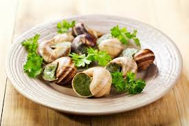
L'esgargot
12 / 13
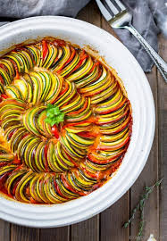
Le ratatouille
13 / 13
le coq au vin